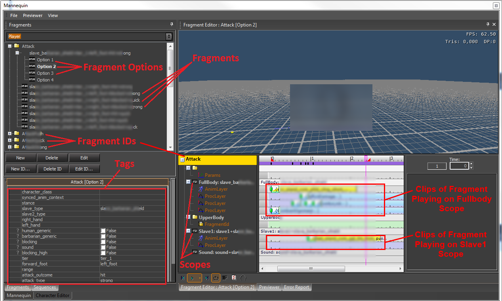
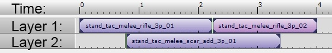
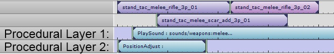
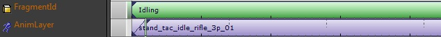
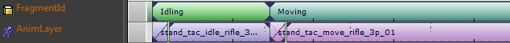
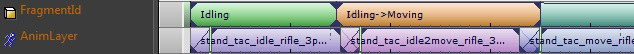
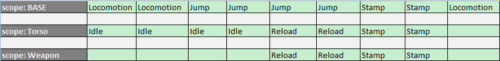

Overview
CryMannequin is set of high level tools to help you manage the complexities of interactive animation.
Where does it live?
It sits in between the game code and the basic animation system, CryAnimation:
What Does it Provide?
It provides the tools for:
- Sequencing complicated interactive animation:
- multiple-layer animations (partial-body animations, additive animations, etc).
- all kinds of procedural work (driving IKs, activating rag-dolls, play sound or particle effects, your game logic, etc).
- multiple characters in one place (co-operative animations, weapon reloading, etc).
- treating sequences of animations as one
- Selecting animations as well as transitions based on context information (through a tag-addressable database).
- Accurate previewing of the above within the editor, including sound and particle effects.
- Organizing your animation data (data-driven, spread out over different files, variation support, etc).
- Decoupling animation and game logic, while still allowing for direct programmer control when needed
Quick Overview of the Main Concepts
Refer to the following screenshot to see where the following concepts show up in the editor (specifically while using the Mannequin Fragment Editor).

The Basic Building Block - Fragments
Instead of starting a specific animation directly you will first have to wrap it into what we call a Fragment. Fragments are created through the editor and are layered animation sequences. Below you see an example of this: 3 animations combined into one fragment.
We have a base layer containing a sequence of 2 animation clips ("stand_tac_melee_rifle_3p_01" and "stand_tac_melee_rifle_3p_02") and a second layer which contains an additive animation clip ("stand_tac_melee_scar_add_3p_01"). If you want you can make the sequence a lot longer or add many more layers. You can also transition from one clip to another, speed up clips, or loop or cut them up. All of this is very similar to other nonlinear animation tools you might be familiar with.

Fragments aren't limited to animation clips though: you can also insert procedural clips which can be anything from clips that drive IK (aiming, looking, etc) to attaching objects, to playing sound effects. Below we extend the example with a procedural clip playing a sound effect and another procedural clip that executes entity alignment code.

How the Game Refers to Animation - FragmentIDs
The game doesn't request fragments directly though. Every fragment gets categorized under a specific name we call a FragmentID. The FragmentID represents an animation state like "Moving", "Idling", "Reloading", "Firing", etc. The game requests fragments by specifying this category, this FragmentID. Contrary to what the name 'FragmentID' might suggest there are typically many fragments that fall under the same FragmentID. For example you can have many different "Moving" fragments: they represent either random variations or context-specific variations (moving while crouched, moving while standing, etc).
Typically a programmer defines a FragmentID for every basic animation state and then animators can create fragments for those FragmentIDs. This is where the name CryMannequin comes from: after a programmer sets up the basic structure of FragmentIDs, animators and technical animators can start to 'dress up' the animation.
Adding Variation - Tags and Options
We can assign the same FragmentID to multiple fragments. They will now become variations for that FragmentID. To guide the selection process each fragment is labeled with Tags.
The tags, for example "crouched" or "machineGun" or "scared", provide a simple way to specify a context under which you want specific fragments to be selected.
For example the game can set tags based upon the state of the game character. Say that when the main character is crouching, the game starts looking for fragments tagged "crouched". And when the character is using a machine gun, the game looks for fragments tagged "machineGun". If the game is looking for both of these tags at the same time it will, as you expect, first look for a fragment having both tags. If there exists no fragment like that, the system will look for fragments labeled either "machineGun" or "crouched". And if it cannot find those either, it will look for a fragment with an empty set of tags that then acts as a fallback. But fragments with other tags like "swimming" or "plasmaRifle" will not be selected.
Still there can be more than one fragment with the same set of tags for a certain FragmentID. Think of these as (possibly random) variations. Each one automatically gets an index which is called an 'option index'. By default a random option index will be chosen, but the game code can select a specific one if it needs some more control over the selection process. For example, this comes in handy when streaming in animations: Say you have 20 different variations but you want to stream in only one of them because anything else would be wasteful. Then you can override the random selection process and make sure that the specific variation you streamed in is selected.
Sequencing Fragments Together - Transitions
Fragments like the above are sequenced together to form your game's animation.
Say you've got a fragment with FragmentID "Moving":
The top of the image shows what the game requests, the bottom shows which animation(s) CryMannequin translates this into. In this case the fragment that is selected contains only one animation, "stand_tac_move_rifle_3p_01".
And say you have another fragment with FragmentID "Idling":

Again, the top of the image shows what the game requests, and the bottom shows which animation this is translated into. And in this case there is also only one animation in the fragment, "stand_tac_idle_rifle_3p_01".
What happens if the game requests these FragmentIDs one after the other? The animations will be sequenced together automatically with a standard blend in between them, just like the basic animation system would do, but with Mannequin the animator can specify the default transition duration when starting the Moving fragment (represented by the little purple block in the middle)

Now we can define a more complicated

Note that the game still requests exactly the same thing: "Idling" followed by "Moving". But there is now an orange area (called a Transition) that pushes back the beginning of the "Moving" fragment. This transition can be set up completely in data by animators such that it gets inserted whenever we go from "Idling" to "Moving". Programmers can, if needed, hook into the transition process.
Scopes
Typically different parts of the same character are in different animation states. For example you might be playing a basic idle animation on the main skeleton, and use an independent override animation to add some random looking around. Or you might want to play another independent idle animation on the weapon the character is carrying. Sometimes you like to synchronize those different parts, and sometimes you don't. CryMannequin has tools to help you set this up. The different independently controllable 'parts' are called Scopes.
Each of these scopes can have at most one fragment playing at any time (or it can be transitioning from one fragment to another as shown before).
As the weapon example above already shows: a CryMannequin setup is not limited to one character instance (ICharacterInstance) or one entity (IEntity). Each scope in the setup can point to a different character instance or even to a different entity. The editor will allow us to edit all the fragments that play on the different scopes as one synchronized whole if we need to.
Which scopes you have and what they are used for is fully configurable. For example here are some of the scopes used in the SDK example:
Scope | Description |
|---|---|
FullBody1P | Plays fragments that affect the full 1st person character (maps to layers 0-2 in the CryAnimation transitionqueue of that character). |
FullBody3P | Plays fragments that affect the full 3rd person character (layers 0-2). |
Aimpose | Plays assets for parametric aiming (layer 4). |
Torso3P | Plays fragments on the torso of the 3rd person character (layers 9-11). |
Weapon | Plays fragments on the weapon. |
WeaponForceFeedback | Plays fragments that contain procedural clips that execute force feedback. |
WeaponSound | Plays fragments that contain weapon sounds. |
AttachmentTop | Plays fragments for the top attachment of the weapon. |
SlaveChar | Plays fragments on the 'enslaved' character when doing a stealth kill or other synchronized animation. |
Playing Fragments on Scopes - Using Actions
Typically fragments will be played by code, through objects called Actions. When an action is 'installed' it controls one or more scopes, which means the action is then the only one able to request fragments on those scopes.
For example here is a little scenario. The columns in the table represent the scopes Base, Torso and Weapon. The rows represent stages in time. We start out moving around, then jump, then reload while jumping and finally perform a special 'stamp' move while we are falling. For this we use actions called Locomotion, Idle, Jump, Reload and Stamp. Locomotion and Jump only control the base of the character - they play animations that are designed to be combined with other animations to control the upper body (additive, partial-body, procedural, ..). Those extra animations are played by actions like 'Idle' and 'Reload'. The 'Reload' action also controls animations on the weapon, which might be a separate character from the main character. Stamp takes control of all scopes.

Examples from the SDK are:Typically, as a designer or animator, you won't be using Actions directly. They are a programming concept, wrapped inside systems like flow nodes or game code. So if you want to play a fragment, you will need to use any of these systems.
- Flownodes: PlayMannequinFragment (sometimes in combination with the flownode EnslaveCharacter).
- AI Flownodes: The AI Sequence flownodes that play simple scripted sequences.
- SDK Example Game Code:
- Player:
- Player Movement Action: Picks between the fragmentIDs MotionIdle, MotionTurn, MotionMovement and MotionInAir based on the player's movement. In this implementation, MotionMove must contain a movement blend space.
- AI:
- AI Movement Action (CAnimActionAIMovement): Picks between the fragmentIDs Motion_Idle, Motion_Move, Motion_Air, Motion_IdleTurn and Motion_IdleTurnBig based on the AI's movement. In this implementation, Motion_Move must contain a movement blend space.
- AI Detail: Picks random fragments from the fragmentIDs MotionDetail_Idle, MotionDetail_Move, MotionDetail_IdleTurn and MotionDetail_Nothing based on the current AI movement. These are supposed to play on scopes that control the upper body and play idle behavior like breathing or subtle torso movement that doesn't interfere with the basic movement fragments.
- Looking, Aiming, LookPose, AimPose actions. These rely on the existance of fragmentIDs with the same name. For more information on how to control this, see Tutorial - Controlling Looking (and Aiming) for AI in Mannequin.
- The Item/Weapon System
- Hit Death Reaction System: Assumes the existance of a fragmentID hitDeath containing the reactions.
- Vehicle System
- Player: